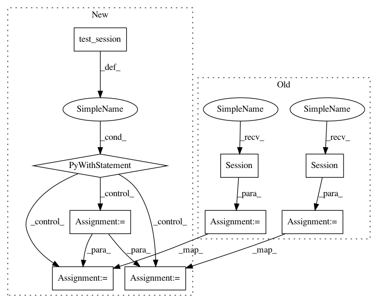

f990d4612c19b6f87f7d3539d0e4de7845dda3f7,testing/test_conditionals.py,DiagsTest,test_whiten,#DiagsTest#,53
Before Change
Fstar_mean_1, Fstar_var_1 = GPflow.conditionals.gaussian_gp_predict_whitened(self.Xs, self.X, self.k, self.mu, self.sqrt, self.num_latent)
Fstar_mean_2, Fstar_var_2 = GPflow.conditionals.gaussian_gp_predict_whitened(self.Xs, self.X, self.k, self.mu, self.chol, self.num_latent)
mean_diff = tf.Session().run(Fstar_mean_1 - Fstar_mean_2, feed_dict=self.feed_dict)
var_diff = tf.Session().run(Fstar_var_1 - Fstar_var_2, feed_dict=self.feed_dict)
self.assertTrue(np.allclose(mean_diff, 0))
self.assertTrue(np.allclose(var_diff, 0))
After Change
self.chol = tf.transpose(self.chol, perm=[1,2,0])
def test_whiten(self):
with self.test_session() as sess, self.k.tf_mode():
Fstar_mean_1, Fstar_var_1 = GPflow.conditionals.gaussian_gp_predict_whitened(
self.Xs, self.X, self.k, self.mu, self.sqrt, self.num_latent)
Fstar_mean_2, Fstar_var_2 = GPflow.conditionals.gaussian_gp_predict_whitened(
self.Xs, self.X, self.k, self.mu, self.chol, self.num_latent)
mean_diff = sess.run(Fstar_mean_1 - Fstar_mean_2, feed_dict=self.feed_dict)
self.assertTrue(np.allclose(mean_diff, 0))
var_diff = sess.run(Fstar_var_1 - Fstar_var_2, feed_dict=self.feed_dict)
self.assertTrue(np.allclose(var_diff, 0))
def test_nonwhiten(self):
with self.test_session() as sess, self.k.tf_mode():
Fstar_mean_1, Fstar_var_1 = GPflow.conditionals.gaussian_gp_predict(self.Xs, self.X, self.k, self.mu, self.sqrt, self.num_latent)
Fstar_mean_2, Fstar_var_2 = GPflow.conditionals.gaussian_gp_predict(self.Xs, self.X, self.k, self.mu, self.chol, self.num_latent)
In pattern: SUPERPATTERN
Frequency: 4
Non-data size: 9
Instances
Project Name: GPflow/GPflow
Commit Name: f990d4612c19b6f87f7d3539d0e4de7845dda3f7
Time: 2017-08-17
Author: art.art.v@gmail.com
File Name: testing/test_conditionals.py
Class Name: DiagsTest
Method Name: test_whiten
Project Name: GPflow/GPflow
Commit Name: f990d4612c19b6f87f7d3539d0e4de7845dda3f7
Time: 2017-08-17
Author: art.art.v@gmail.com
File Name: testing/test_conditionals.py
Class Name: DiagsTest
Method Name: test_whiten
Project Name: GPflow/GPflow
Commit Name: f990d4612c19b6f87f7d3539d0e4de7845dda3f7
Time: 2017-08-17
Author: art.art.v@gmail.com
File Name: testing/test_conditionals.py
Class Name: DiagsTest
Method Name: test_nonwhiten
Project Name: GPflow/GPflow
Commit Name: f990d4612c19b6f87f7d3539d0e4de7845dda3f7
Time: 2017-08-17
Author: art.art.v@gmail.com
File Name: testing/test_conditionals.py
Class Name: WhitenTest
Method Name: test_whiten
Project Name: GPflow/GPflow
Commit Name: f990d4612c19b6f87f7d3539d0e4de7845dda3f7
Time: 2017-08-17
Author: art.art.v@gmail.com
File Name: testing/test_conditionals.py
Class Name: WhitenTestGaussian
Method Name: test_whiten